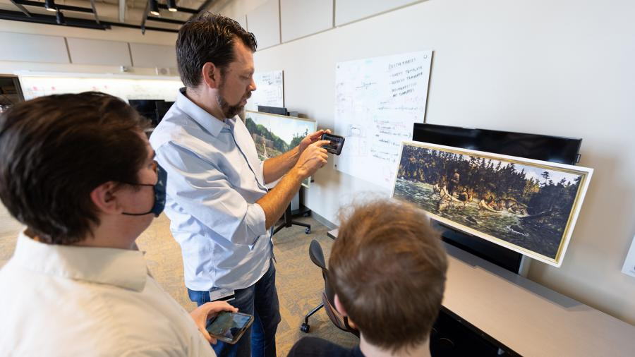
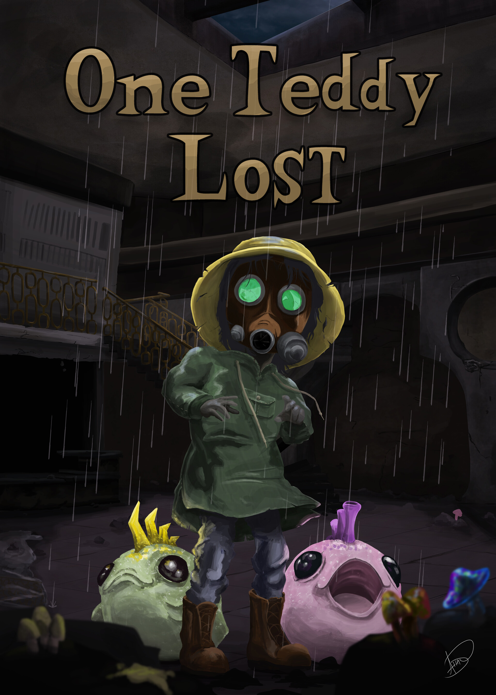
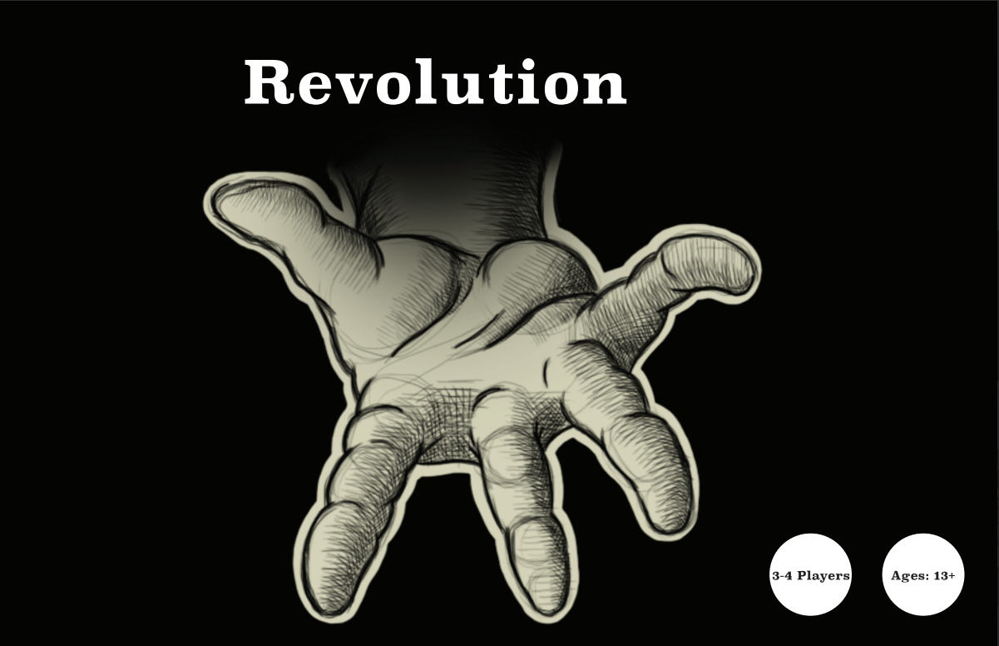
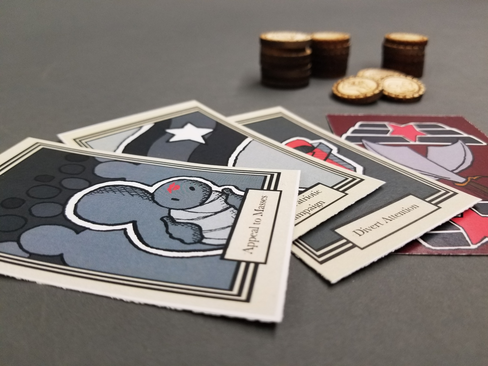
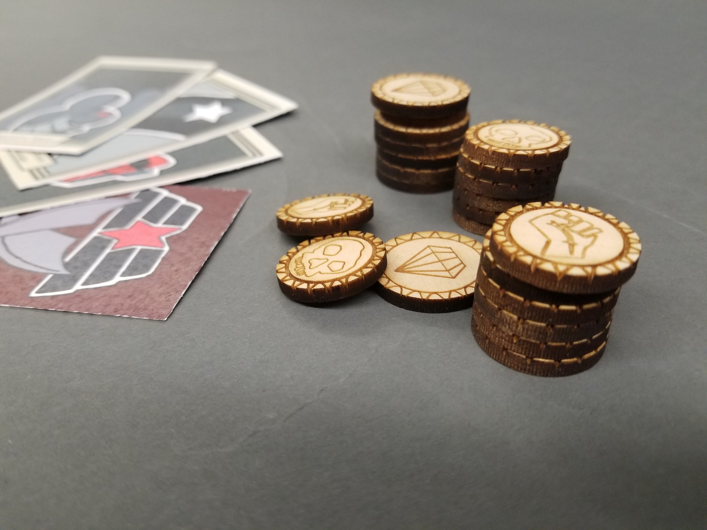
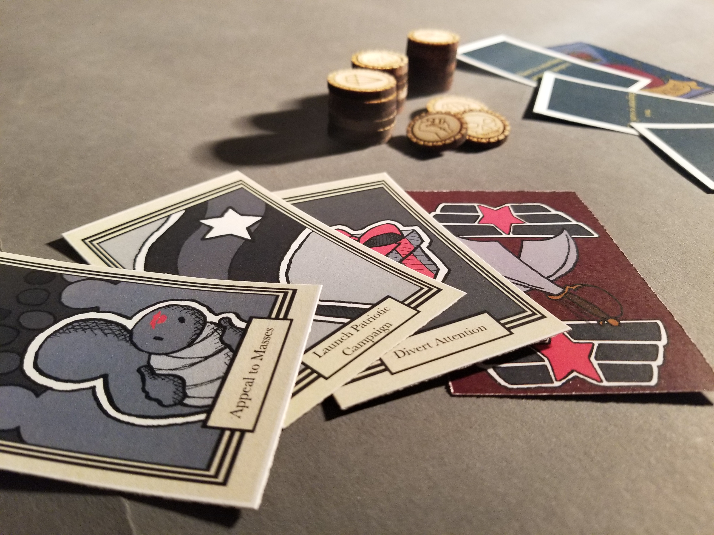
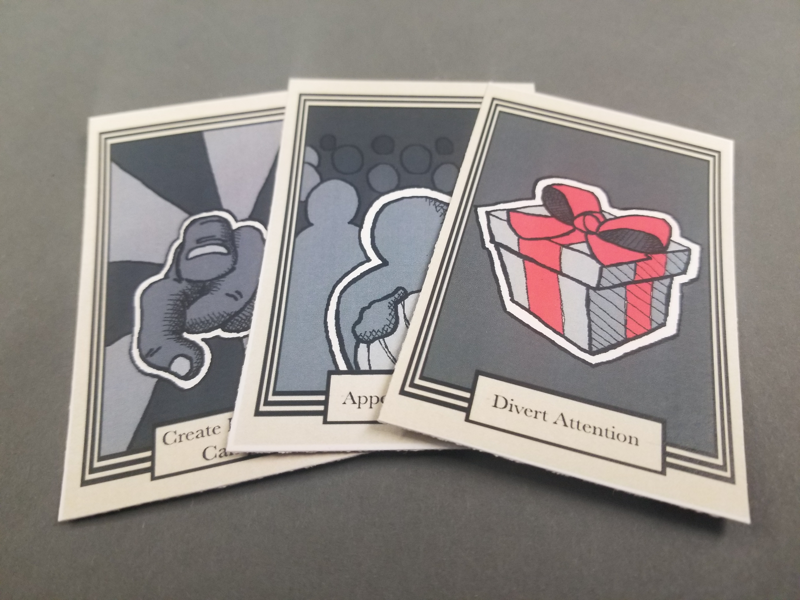

Stout Mobile Augmented Reality Tour of Art
Transforming Art Appreciation with Augmented Reality
I am a co-creator of SMART-Art, an augmented reality (AR) framework that skillfully combines the capabilities of Unity, Vuforia, and Adobe XD. This project was purpose-built for the digital humanities department with funding from the Menard Center for the Study of Institutions and Innovation, presenting students with an invaluable tool to superimpose their research onto the rich collection of canvas and mural pieces gracing the UW-Stout campus.
SMART-Art symbolizes the perfect fusion of technology and art, and I am honored to have occupied a pivotal position in its development and successful implementation.
role: unity engineer, product designer, ui/ux designer, researcher



One Teddy Lost
Puddle Jump Studios
Venture into the eerie world of 'One Teddy Lost,' a captivating third-person, kid-friendly horror puzzle game. Amidst the desolation of a post-apocalyptic wasteland marred by nuclear devastation and climate catastrophe, you step into the shoes of a resilient child. Trapped within the enigmatic ruins of a factory once operated by the curious company, 'Just Add Water,' your sole companion, a beloved Teddy Bear, has mysteriously vanished. Your mission? Navigate the eerie expanse of the forsaken factory, piecing together cryptic puzzles and forging alliances with peculiar capsule creatures along the way. But beware! A shrouded, malevolent presence lurks in the shadows, ready to strike when you least expect it. Will you uncover the truth behind the Teddy's disappearance and emerge victorious in this thrilling and atmospheric adventure?
role: game programmer, code czar, technical artist



Skybox Shader
CS343 Capstone Project
Custom Skybox shader in Unity using HLSL.
role: technical artist


Three.js Dithering
Intro
GLSL dithering shader implemented in the browser using Three.js, inspired by Lucas Pope's Return of the Obra Dinn.
role: web programmer, technical artist


Boids
Intro
Boids or "bird-oids" written in C#, implemented in Unity based on Craig Reynolds' 1986 paper.
ai programmer


Revolution
A Social Strategy Card Game
Step into the shoes of a ruler in a tumultuous kingdom, where discontented citizens are on the brink of revolt. Your every decision shapes the public's perception of your leadership, measured by the dynamic trio of Fear, Wealth, and Anger. Striking a delicate balance among these three resources is essential to maintaining your grip on power. In this strategic card game, your ultimate goal is to quell the uprising through any means necessary. Along the way, unexpected events will test your resolve, forcing you to make critical choices. Yet, you must always consider the prevailing sentiment of the people and how your responses will impact the burgeoning revolution. Will you emerge as a shrewd and effective ruler or fall victim to the winds of change?
role: researcher, game designer, fabricator




